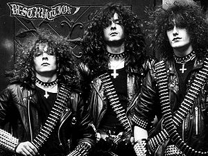

Thrash metal
 De: La Frikipedia, la enciclopedia extremadamente seria.
De: La Frikipedia, la enciclopedia extremadamente seria.
El thrash metal es un estilo que surgió a principios de los '80(aunque Exodus, Tankard, Sodom, Forbidden y Overkill (por citar algunos), horrorizados ante el trabajo de los anteriores, decidieron transformar ese pudding de riffs en AUTÉNTICO metal, añadiéndole los característicos gruñidos que caracterizarían el género y lo que vendría después.
 ¿¿Acaso has visto a alguien más thrasher que estos?
Temática de las letras
Las canciones Thrash suelen hablar de batallas apocalípticas, lluvias de sangre, beber alcohol, guerras, guerras nucleares,satán, mitines politicos (como destruir capitales de paises, cogerse a la policia, proclamar guerra en medio oriente, causar una guerra civil, denunciar la mierda de lo politicos, etc.) algunas veces de suicidio y otras de tipos que perdieron todos sus organos pero aun siguen vivos de una manera muy extraña, matar humanos... Vamos, que describen la rutina diaria de sus seguidores. Algunas hablan de Diox o gilipolleces de esas, pero sus seguidores suelen ser perseguidos y sacrificados al modo Thrash, esto suele ser con un taco de billar atravesando la cabeza del sujeto.
Características de los Thrasher
Cómo distinguir a un Thrasher
Los thrashers son una variante del true jebi: cuando un jebi se consolida es porque se encuentra identificado y realizado con uno de sus subgéneros, el cual defenderá hasta la muerte y con honor y orgullo. Adopta conductas (o las practica desde su nacimiento pero mira, ahora que tiene doce años conoce a los demás thrash de la ciudad...), estética, música y un laargo etcétera. Por suerte, no existen falsos thrashers.
Cuando van en grupos, los jebis suelen tener entre ellos a uno o dos thrashers, que se distinguen del jebi genérico en:
- Llevan zapatillas blancas (sí, blancas, son más heavys que tú así que pueden permitírselo)
- Suelen tener las melenas más largas (
casi hasta el culo y mas abajo) y un cinturón de balas.
- Tambien suelen llevar una camiseta de Overkill (crearon el thrash), Tankard, Slayer ó en su defecto de Exodus o incluso una de Judas Priest.
- Thrasher que se repete no tendrá entre sus principales gustos a Violator, Tankard, Exodus, Sodom Toxic Holocaust Sepultura o Destruction. El sabe que su música no debe hacerse comercial
- Su música es extremadamente estridente, además de bastante rápida y repetitiva con unos solos mas agudos que la voz del vocalista de Judas.
- Suelen ser poseros que escuchan o escuchaban nu metal
- Son los que más alcohol beben en todo el grupo.
- Dominan el juego del billar
- Son capaces de crear cerveza a partir de sudor y raices de plantas
- Son los seres mas macarras de este mundo
- Se parecen a los Skaters, la diferencia es que los thrashers llevan más tiempo sin bañarse, y no tienen tantos piojos, ya que un buen thrasher cuida su pelo como si fuera un músico de Glam.
- El thrasher verdadero sabe que Metallica tiene buena música, sabe diferenciarla, y que la banda ha sido tan influyente como Slayer o Testament para el sub-género.
Frases thrasher
- ``"Metallica solo fue bueno hasta el And Justice For Jason, después se volvieron maricas"``
- ```"¿Los cuatro grandes del thrash Metallica, Megadeth, Slayer y Anthrax? Deberían poner a Exodus, Sodom, Testament y Kreator."```
- ```"Anthrax ni es pesado."```
- ```"Dave Mustaine no sabe cantar."```
- ```"¿Que Metallica el mejor grupo de Thrash? Se nota que no has escuchado Annihilator."```
- ```""Paul Baloff vive aún! (en nuestros corazones)"```
- ```"Tankard es para posers, igual que Metallica"
- ```"Si te fijas bien, la calidad de metallica decrece de manera constante durante sus albums. Kill Em'All (dioses) Ride The Lightning (semi-dioses) Master of Puppets (grandes) ...And Justice For All (bastante bueno) Black Album (bueno) el resto es una mariconada"```
- ```"¡¡¡Thrash till death!!!"```
- ```"El mundo esta lleno de posers, ¡hay que exterminarlos!"```
- ```"Metallica murió con Cliff Burton"```
- ```En el mundo del metal hay dos tipos de personas, Possers y Etilístas.```
- Todas las frases anteriores fueron escritas por uno de ellos, que no sabe nada de buena música
- ```"Angel of Death!"```
La alimentación del Thrasher
Esto es simple, todos sus nutrientes los toman de 3 importantes elementos: La pizza, las hamburguesas, y, el más importante de todos, la cerveza. A pesar de todo esto, la obesidad no suele darse, salvo en algunos cantantes que regresan tras varios años retirados.
En el caso de Mike Muirr, de Suicidal Tendencies, la adicción a la Pepsi lo dejó obeso.
Debilidades del Thrasher
Ninguna... Bueno, son adictos a la cerveza... ¿pero es eso una auténtica debilidad? (Ten en cuenta que si tu tienes una cerveza y un thrasher que no tenga te ve, intentará matarte. Y créeme, si quiere matarte, lo hará)
El Thrasher en batalla
Aparte de las características del jebi genérico tienen alguna más:
- Tienen un ataque más, que consiste en hacer aparecer un taco de billar de la nada. Este ataque consume 3 puntos de magia y hace 2d8x10 puntos de golpe.
- Los flakk 88 no los pueden dañar normalmente, pero a cambio pierden su invulnerabilidad contra los proyectiles de las MG-42, que tampoco son fabricados.
- Su melena protectora dura el doble de turnos que en el jebi genérico.
- Además de visión infrarroja, cuentan con detector de mentiras y detector de miedo, vamos, que no se las puedes meter dobladas.
- Los Thrasher suelen llevar cinturones de balas todo el día y toda la noche. Si avistan a un cani o subgéneros del mismo tienen la facultad de hacer aparecer una ametralladora de la nada (en el caso de las chicas) o un M20A1/A1B1 (chicos) y ponerse a disparar hasta acabar con el enemigo. Este ataque consume 5 puntos de magia (7 si elegimos la reproducción automática de las balas)y hace 3d12x500 puntos de daño.
- Tenemos también en cuenta el tema de las muñequeras de pinchos, que son el triple o el cuadruple de largas que las del jebi clásico, y hacen un daño directamente proporcional al número de hileras de pinchos que lleven.
- Si el fan tiene una camiseta de Metallica (Metallica, no Moneytallica) y pone a sonar Seek & Destroy, los que no adoren a la banda se quedaran sin
polla oidos para toda su vida.
- También, si tienen una camiseta de Megadeth, y ponen a sonar Wake Up Dead o Holy Wars... The Punishment Due, a todo volumen, Dave Mustaine, aparece de la nada e intenta asesinar a todo mundo que quiera hacer daño a su verdadero fan (ya que son más bien pocos), con su mása que afeminada mirada y su voz, similar a la de un cruce entre un bulldog castrado y un chiuahua.
- En otro caso si se dispone de una camiseta de Sodom o Destruction y se pone a sonar al máximo Betrayer, Agent Orange o Invincible Force (elijan la alternativa que elijan), aparecerán Frank Blackfire y Mille Petrozza y empiezan a morder ojos para dejar que sea el thrasher el que aseste el golpe de gracia
- Si por gracia del gran mentor Thrash Metal, Satanás o tambien llamando Rob Araya (fusion apocaliptica de Tom Araya y Rob Halford) ponen Kill Again o Fight Till Death (ambas de Slayer) se cubre de una fuerza negra poderosísima capaz de matar a Dios y a Diox con solo pensar en ellos en }{+8´{0'{5{6+´76{8+7´8´7{{{{6´6{7´7´´8+8´8+90´656´4´54+65´76+45 segundos, se dice que tambien sirve para abrir latas de conservas y quemar una Biblia con la mirada.
Alianzas y enemistades
Al contrario de lo que se suele pensar, los thrashers se llevan bien con los reggaetonteros emos y a los pijos siempre que haga falta, compartir birras, kalimotxo, drogas y demás música de calidad YEEEEAAAAAAAAAAAHHHHH.
Gustos y aficiones de los Thrasher
Los thrashers son grandes aficionados a cumplir con los mandatos de las letras de sus grupos. Si en un concierto el cantante habla de muerte y destrucción, la gente del público se pelearán entre ellos como fieras. Si hablan de fanatismo religioso, se profanarán crucifijos, estampas, estatuas y hasta señales de tráfico... pero almenos los thashers no pondrán un disco del revés para escuchar un mensaje encriptado sugiriendo que se suiciden. Aunque lo hagan y eso les garantice un infierno saturado de riffs celestiales y metal por toda la eternidad... se lo pasan demasiado bien en vida como para quitársela así como así. ¿Cómo iban a tocar su guitarra desde la tumba?
Además, tienen una curiosa afición con el billar, que sólo comparten con otros jebis si están en su mismo grupo. Un auténtico thrasher es capaz de meter cualquier bola a más de tres bandas y la negra en su correspondiente agujero incluso cuando van borrachos. Si un thrasher no sabe jugar al billar es que todavía tiene que madurar en la escuela. Estudiad geometría y seréis felices...
El thrasher también gusta mucho de hacer deporte (por eso es que luego usan muñeqeras deportivas en vez de las de pinchos); algunos deportes que practican son:
- Mosh Sincronizado
- Levantamiento de tarro
- Caceria de emos
- Solos con guitarra de aire
- HeadBang Extremo
- Y como se dijo antes el billar... entre otros.
Las muñequeras le sirven a los thrashers para secarse el sudor y la sangre de sus victimas adeversarios.
El cinturón de balas: El arma definitiva del Thrash Metal
Es obvio que las armas de fuego y las motosierras están presentes en la vida cotidiana de cualquier thrasher, pero tienen un arma inofensiva a la vista de los poco familiarizados con estos especímenes, pero capaz de devastar regiones enteras. Se trata del cinturón de balas.
Puede parecer un simple elemento decorativo en la vestimenta del thrasher, pero le confiere unos terribles poderes, algunos de ellos aquí listados:
- Repartir hostias
- Rasgar piel
- Estrangular pijos
- Matar al primer hijo del Faraón por su propia mano arrastrándose por la Tierra de Goshen
- Matar a todos (Escuchar el Kill 'Em All)
- Sentir el fuego (Escuchar el Feel The Fire)
- Sentir tambien el placer de matar (Escuchar el Pleasure To Kill)
- Hacer de ello un buen negocio (Escuchar Killing Is My Business...And Business Is Good)
- Sentir tambien tambien el placer de la carne (Escuchar el Pleasures Of The Flesh)
- Devastar eternamente (Escuchar el Eternal Devastation)
- Viajar a 7 iglesias (Escuchar el Seven Churches)
- Perder en videojuegos (Escuchar el Game Over)
- Estar entre los vivos (Escuchar el Among The Living)
- Reinar en sangre (Escuchar el Reign In Blood)
- Estar bajo los restos (Escuchar Beneath The Remains)
- Darte pesadillas eternas (Escuchar Eternal Nightmare)
- Darte la bienvenida al infierno (Escuchar el Welcome To Hell)
- THRASH! THRASH! THRASH! We do it for the THRILL! THRILL! THRILL! We forcing you to MOSH! MOSH! MOSH! Tonight and to DEEEEEEEEEEEEEEEEEEEEEATH
- Colapsar el telediario mientras matan pijos.
- Usarlo como trampa para atraer a falsos jebis o falsos thrasher de mierdallica hacia él, y asestar posteriormente el golpe de gracia
- Estrangular pijos mientras les rasga la piel
- Desatar el apocalipsis
- Cientos de cosas más
- ...si...cientos de cosas más...
Siempre que veas a un thrasher con el cinturón de balas, recuerda todo esto antes de meterte con él. Si definitivamente decides meterte con él... Descansa en paz
Autor(es):
- Fordus
- Khazike Khashondo
- MetallicEgg
- AlemanH
- Veni Vidi Vici
- Mad peW
- GIBZAZ
- Lord Black wizard
- Kevrochi
- Blacklfgo27
Frikipedia 2005-2016, Licencia
GFDL 1.2 - Extraído por FrikiLeaks